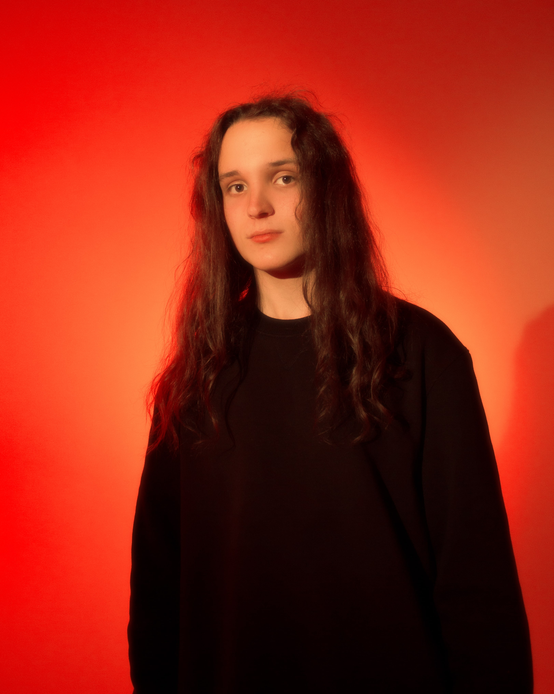

dysania! - инди-рок группа, образовавшаяся в Минске в сентябре 2020 года.
В данный момент в основном составе находятся 5 человек, а также 1 сессионный участник (выбыл после концерта 26.11.2021г.). Коллектив зародился с названием "Bitten Lips" (под данным названием материал не выходил) и первоначальный состав так же насчитывал 5 человек (3 из которых находятся в текущем). Первый мини-альбом "Letas" увидел свет 31.05.2021г. и стал довольно таки успешным для первого релиза. Чуть позже, в июле того же года начинаются съемки клипа на песню "Жди" из альбома. Выпуск клипа состоялся 16.09.2021г. и на данный момент насчитывает более 1.5 тыс. просмотров. Месяц спустя, 05.10.2021г. группа выпускает первый сингл "Пламя", который стал более прослушиваемым, чем "Letas" в виду роста популярности группы.
Ниже, мы предлагаем вам познакомится с составом dysania!
Глеб - бас-гитарист группы dysania! Ровно как и Елисей и Никита, так же является одним из участников первоначального состава группы. Вместе с Тимофеем является ритм-секцией. Помимо игры на басу, в его задачи входят организационные и финансовые моменты, например, бронирование репетиций для группы, учет расходов/доходов, публикация песен/клипов, переговоры и оформление прочих договоренностей для пользы группы.

Тимофей - барабанщик группы. Появился в составе в конце декабря 2020 года. Отлично играет на барабанах, сколько бы их не было. Является ведущим в ритм-секции и наиважнейшим членом группы, так как он должен задавать ритм вместе с басом, то есть, в каком-то смысле, "вести" группу.
К сожалению, в декабре 2021 года ему пришлось покинуть состав группы из-за политического давления на его семью. Но было принято решение оставить Тимофея в составе группы, так как ему пришлось покинуть ее не по своей воле.
- 